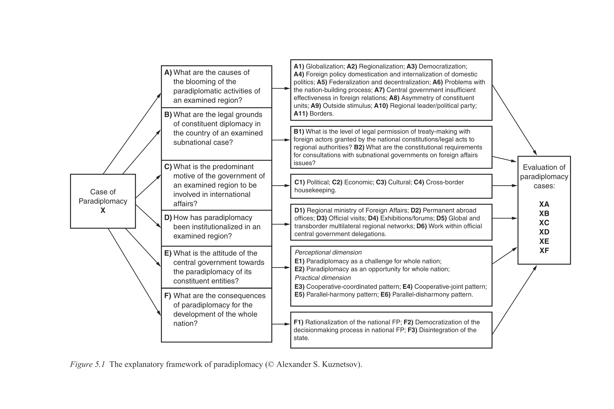
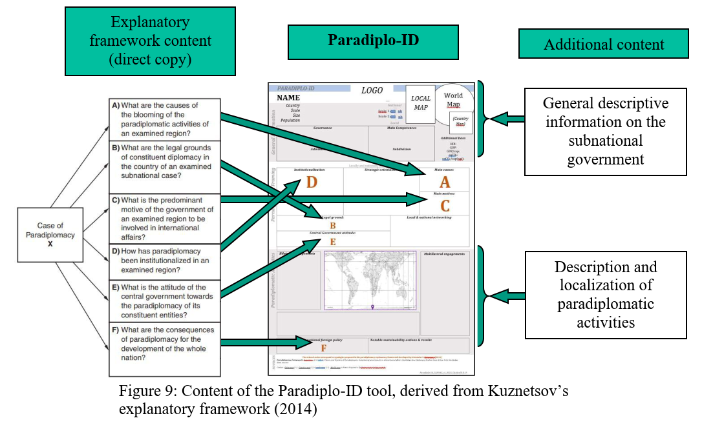
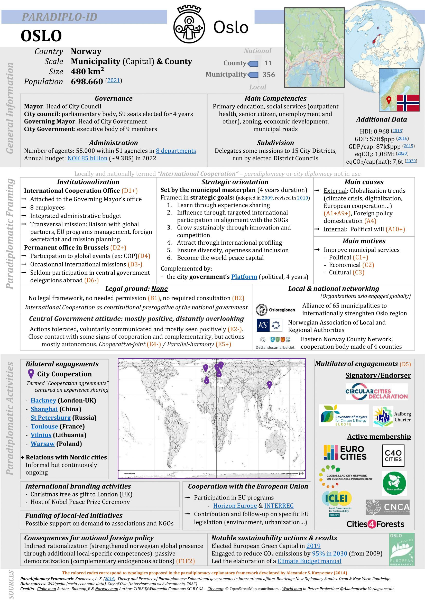

Dans l'objectif de présenter de manière synthèse et accessible des données comparatives, la page web de chaque ville suit une même structure. Les différentes sections de cette page standardisée s'appuient sur le cadre analytique de la paradiplomatie développé par Alexander Kuznetsov (2015) dans son ouvrage Theory and Practice of Paradiplomacy: Subnational Governments in International Affairs, ainsi que son adaptation synthèse réalisée par David-Pierre Giudicelli (2022) dans son mémoire de maîtrise Exploring the contribution of paradiplomacy to climate resilient development: the cases of Oslo and Nouvelle-Aquitaine.
La page web de chaque ville est donc structurée comme suit :
Les divers éléments du cadre de Kuznetsov sont présents de manière transversale dans la fiche Paradiplo-ID de Giudicelli, mais la section « cadre diplomatique » est particulièrement concernée. Cette dernière est structurée autour de cinq des six grandes composantes du cadre de Kuznetsov (A à F), initialement développées sous forme de questions. En ordre, ces six composantes sont: les causes de l'activité paradiplomatique de la ville (A), les bases légales de la paradiplomatie (B), les motifs prédominants qui poussent la ville à conduire des relations internationales (C), la manière dont la paradiplomatie est institutionnalisée dans la ville (D), l'attitude des gouvernements supérieurs face aux activités paradiplomatiques de la ville (E), ainsi que les conséquences ou les résultats de la paradiplomatie pour le développement de la nation toute entière (F).
Cadre d'analyse de la paradiplomatie développé par Alexander Kuznetsov

Source : Kuznetsov 2015, p. 116.
Giudicelli décrit les multiples objectifs de sa démarche comme suit :
However, the descriptive profile of subnational governments and more specific data on their actual paradiplomacy activities were not initially included [in Kuznetsov's framework]. This lack led to imagine how to combine all the relevant information of each case into a single synthesis tool. [...]
Additionally, the wish to add some reciprocity into the research made it interesting - and potentially innovative - to summarize in a tool all paradiplomacy information, and to structure it according to a scientific framework. It was imagined as a way to emphasize the existence of academic interest upon the practice of paradiplomacy, and inform on the existence and consistence of “paradiplomacy” itself (a clear lack identified from the literature review). This led to conceive a tool with its sharing in mind, first to allow for a facilitated verification by informants themselves, but also to make the content somewhat appealing, implying readability, simplification, and an ounce of esthetics.
Finally, the objective to compare two cases in a standardized manner thanks to the paradiplomacy framework guided the idea to push the operationalization of the tool and make it an easy-to-use instrument for this specific research, but also eventually transferable to other research setups. Such standardization implied the elaboration of a canvas that could hold all relevant information about any type of paradiplomacy case - the profiling of a subnational government granting rapid access to general information, specific and summarized description of paradiplomatic actions, and synthesized elements of the explanatory analysis emanating from the paradiplomacy framework.
All these aspects led to the elaboration of the tool nicknamed “Paradiplo-ID”. Thought as an experimental hybrid frame, it embodied an attempt to efficiently bridge the needs for comparative analysis, result synthesis, informant review, and even potential further standardization. By carefully integrating each question from Kuznetsov's explanatory framework along descriptive data, it aimed to provide a tool in the shape of a technical sheet complimentarily showcasing scientific solidity, within a standardized frame.
The structuration of its content and the links to each question of the paradiplomacy explanatory framework (from A to F as originally defined) are presented in the following figure [...] (Giudicelli 2022, p. 44).
Explication du lien entre le cadre analytique de Kuznetsov et la fiche Paradiplo-ID de Giudicelli

Source : Giudicelli 2022, p. 45.
Fiche Paradiplo-ID complète de la ville d'Oslo, en Norvège

Source : Giudicelli 2022, p. 51.
Pour des questions concernant ce projet, des suggestions d'amélioration ou tout autre commentaire, envoyez-moi un courriel directement à l'aide du formulaire suivant. Il suffit d'entrer votre adresse courriel, l'objet et le message.